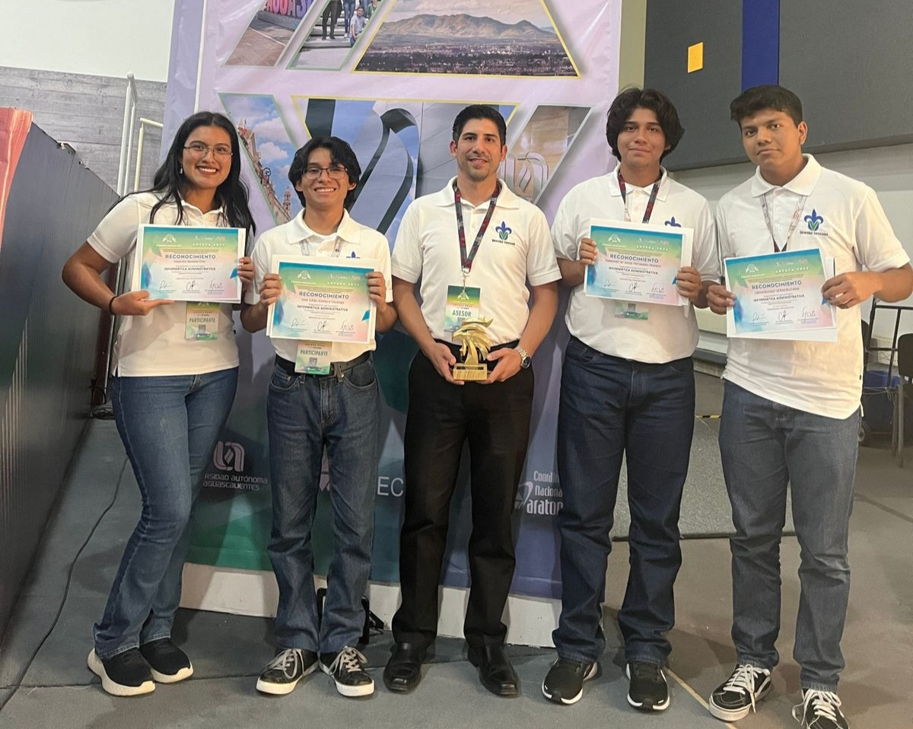

Voz Amiga
Aplicación diseñada para personas con discapacidad visual, brindando herramientas para fomentar su independencia
mediante diversas funcionalidades. Entre ellas se incluyen el reconocimiento de texto, la identificación de colores,
y retroalimentación auditiva. Además, ofrece servicios esenciales como ubicación en tiempo real,
alertas de emergencia y otras opciones adaptadas a sus necesidades diarias.
Simulación de base de datos del IMSS
Simulación de la base de datos del IMSS diseñada para gestionar de manera eficiente todos los
aspectos relacionados con la atención médica de los ciudadanos Este tipo de base de datos
facilita la administración de pacientes, doctores, medicamentos, y las citas médicas,
los cuales son elementos fundamentales en el flujo de trabajo dentro del sistema de salud.

XVVII Maratón Regional ANFECA
Segundo lugar obtenido en el maratón de conocimientos regional ANFECa zona 6, sur
en la categoría de Informatica Administrativa celebrado los días 25 y 26 de
abril del 2024 en las instalaciones del Instituto Tecnológico de Chetumal Quintana Roo.
XVVII Maratón Nacional ANFECA
Primer lugar obtenido en el maratón de conocimientos nacional en la categoría de Informatica Administrativa
celebrado los días 17 y 18 de octubre del 2024 en las instalaciones de la Universidad Autónoma de Aguascalientes Aguascalientes.

Infomatrix Local Coatzacoalcos 2025
Medalla plata obtenida en emprendimiento en la categoría de divulgación científica
celebrado los días 14 y 15 de marzo del 2025 en las instalaciones del Instituto Tecnológico Superior de Coatzacoalcos Veracruz.
Infomatrix Nacional México 2025
Medalla plata obtenida en emprendimiento en la categoría de divulgación científica
celebrado los días 23 y 24 de mayo del 2025 en las instalaciones de la Universidad de Ixtlahuaca México.
XIX Expo Regional Emprendedora Anfeca 2025
Segundo lugar obtenido en emprendimiento en la categoría social
celebrado los días 28, 29 y 30 de mayo del 2025 en las instalaciones de la Universidad Autónoma del Carmen Campeche.